Last updated: 2025-10-29
Checks: 7 0
Knit directory: immgen-t-factors/analysis/
This reproducible R Markdown analysis was created with workflowr (version 1.7.2). The Checks tab describes the reproducibility checks that were applied when the results were created. The Past versions tab lists the development history.
Great! Since the R Markdown file has been committed to the Git repository, you know the exact version of the code that produced these results.
Great job! The global environment was empty. Objects defined in the global environment can affect the analysis in your R Markdown file in unknown ways. For reproduciblity it’s best to always run the code in an empty environment.
The command set.seed(1) was run prior to running the
code in the R Markdown file. Setting a seed ensures that any results
that rely on randomness, e.g. subsampling or permutations, are
reproducible.
Great job! Recording the operating system, R version, and package versions is critical for reproducibility.
Nice! There were no cached chunks for this analysis, so you can be confident that you successfully produced the results during this run.
Great job! Using relative paths to the files within your workflowr project makes it easier to run your code on other machines.
Great! You are using Git for version control. Tracking code development and connecting the code version to the results is critical for reproducibility.
The results in this page were generated with repository version 06b93c5. See the Past versions tab to see a history of the changes made to the R Markdown and HTML files.
Note that you need to be careful to ensure that all relevant files for
the analysis have been committed to Git prior to generating the results
(you can use wflow_publish or
wflow_git_commit). workflowr only checks the R Markdown
file, but you know if there are other scripts or data files that it
depends on. Below is the status of the Git repository when the results
were generated:
Ignored files:
Ignored: .Rhistory
Ignored: .Rproj.user/
Ignored: analysis/.Rhistory
Ignored: code/.Rhistory
Untracked files:
Untracked: .DS_Store
Untracked: .gitignore
Untracked: analysis/.DS_Store
Untracked: analysis/conditional_analysis.rmd
Untracked: analysis/further_validation_f68.rmd
Untracked: analysis/level2_organ.rmd
Untracked: code/.DS_Store
Untracked: code/Figure1.R
Untracked: code/ROC.R
Untracked: code/analyze_protein_selected.R
Untracked: code/analyze_protein_selected.sbatch
Untracked: code/analyze_protein_selected_lognorm.R
Untracked: code/analyze_protein_selected_lognorm.sbatch
Untracked: code/analyze_protein_selected_positive.R
Untracked: code/analyze_protein_selected_positive.sbatch
Untracked: code/compare_greedy_back.R
Untracked: code/replicate_whole_data.sbatch
Untracked: data/.DS_Store
Untracked: data/annot_level1.rds
Untracked: data/annot_level2.rds
Untracked: data/condition_broad.rds
Untracked: data/condition_broad_AUC.rds
Untracked: data/condition_broad_AUC_CD8.rds
Untracked: data/condition_detailed.rds
Untracked: data/condition_detailed_AUC.rds
Untracked: data/condition_detailed_AUC_CD8.rds
Untracked: data/conditional_analysis_factor.rds
Untracked: data/conditional_analysis_factor_stats.rds
Untracked: data/factor_matching_results.csv
Untracked: data/factor_matching_results_noback.csv
Untracked: data/fit1_summary.qs
Untracked: data/fit1_summary_noback.qs
Untracked: data/fit2_summary.qs
Untracked: data/fit2_summary_noback.qs
Untracked: data/flash_fixed_F_pm.rds
Untracked: data/flash_fixed_loading.rds
Untracked: data/flashier_snmf_summary.rds
Untracked: data/level_1_AUC.rds
Untracked: data/moran_list_umap.rds
Untracked: data/organ.rds
Untracked: data/organ_AUC.rds
Untracked: data/organ_AUC_healthy.rds
Untracked: data/organ_healthy.rds
Untracked: data/protein_flash_selected_summary.rds
Untracked: data/protein_flash_selected_summary_lognorm.rds
Untracked: data/protein_flash_selected_summary_pos.rds
Untracked: data/protein_mat.rds
Untracked: data/protein_mat_normalized.rds
Untracked: data/protein_mat_normalized_lognorm.rds
Untracked: data/replicate_whole_data.sbatch
Untracked: data/seurat_meta.rds
Untracked: data/umap_result.rds
Untracked: figures/
Unstaged changes:
Modified: analysis/half_validation_hungarian.rmd
Modified: analysis/half_validation_hungarian_noback.rmd
Modified: analysis/protein_factor.rmd
Deleted: code/halves_validation.R
Note that any generated files, e.g. HTML, png, CSS, etc., are not included in this status report because it is ok for generated content to have uncommitted changes.
These are the previous versions of the repository in which changes were
made to the R Markdown (analysis/annotate_factors.rmd) and
HTML (docs/annotate_factors.html) files. If you’ve
configured a remote Git repository (see ?wflow_git_remote),
click on the hyperlinks in the table below to view the files as they
were in that past version.
| File | Version | Author | Date | Message |
|---|---|---|---|---|
| Rmd | 06b93c5 | Ziang Zhang | 2025-10-29 | workflowr::wflow_publish("analysis/annotate_factors.rmd") |
| html | 1e5cfa8 | Ziang Zhang | 2025-10-17 | Build site. |
| Rmd | 82345b1 | Ziang Zhang | 2025-10-17 | workflowr::wflow_publish("analysis/annotate_factors.rmd") |
| html | 39126f4 | Ziang Zhang | 2025-10-17 | Build site. |
| Rmd | c500402 | Ziang Zhang | 2025-10-17 | workflowr::wflow_publish("analysis/annotate_factors.rmd") |
| html | bd589ef | Ziang Zhang | 2025-10-14 | Build site. |
| Rmd | f534851 | Ziang Zhang | 2025-10-14 | workflowr::wflow_publish("analysis/annotate_factors.rmd") |
| html | 80d0b9c | Ziang Zhang | 2025-10-14 | Build site. |
| Rmd | f68afab | Ziang Zhang | 2025-10-14 | workflowr::wflow_publish("analysis/annotate_factors.rmd") |
| html | 323bece | Ziang Zhang | 2025-10-13 | Build site. |
| Rmd | cb2387a | Ziang Zhang | 2025-10-13 | workflowr::wflow_publish("analysis/annotate_factors.rmd") |
| html | 87479b5 | Ziang Zhang | 2025-10-13 | Build site. |
| Rmd | aee7fd4 | Ziang Zhang | 2025-10-13 | workflowr::wflow_publish("analysis/annotate_factors.rmd") |
| html | 5ad0ceb | Ziang Zhang | 2025-10-06 | Build site. |
| Rmd | 3065019 | Ziang Zhang | 2025-10-06 | workflowr::wflow_publish("analysis/annotate_factors.rmd") |
| html | 587bc1b | Ziang Zhang | 2025-10-06 | Build site. |
| Rmd | c80365e | Ziang Zhang | 2025-10-06 | workflowr::wflow_publish("analysis/annotate_factors.rmd") |
| html | b4a6c9d | Ziang Zhang | 2025-09-28 | Build site. |
| Rmd | 62d8278 | Ziang Zhang | 2025-09-28 | workflowr::wflow_publish("analysis/annotate_factors.rmd") |
| html | 7bbce18 | Ziang Zhang | 2025-09-23 | Build site. |
| Rmd | 5afea6c | Ziang Zhang | 2025-09-23 | workflowr::wflow_publish("analysis/annotate_factors.rmd") |
| html | da7c136 | Ziang Zhang | 2025-09-23 | Build site. |
| Rmd | 96eea9c | Ziang Zhang | 2025-09-23 | workflowr::wflow_publish("analysis/annotate_factors.rmd") |
| html | cdd1941 | Ziang Zhang | 2025-09-20 | Build site. |
| Rmd | 28f8e39 | Ziang Zhang | 2025-09-20 | workflowr::wflow_publish("analysis/annotate_factors.rmd") |
| html | 6e17691 | Ziang Zhang | 2025-09-20 | Build site. |
| Rmd | 72826ce | Ziang Zhang | 2025-09-20 | workflowr::wflow_publish("analysis/annotate_factors.rmd") |
Use this function for plotting:
source("https://raw.githubusercontent.com/stephenslab/single-cell-jamboree/refs/heads/main/code/group_factors.R")
library(ggplot2)
library(fastTopics)Read in the meta-information and the factorization result:
data_path <- "../data/"
code_path <- "../code/"
# data_path <- "data/"
# code_path <- "code/"
source(paste0(code_path, "ROC.R"))
seurat_meta <- readRDS(paste0(data_path, "seurat_meta.rds"))
flashier_snmf_summary <- readRDS(paste0(data_path, "flashier_snmf_summary.rds"))Align the cells to remove the extra cells in the flashier result:
cells_flashier <- rownames(flashier_snmf_summary$L_pm)
cells_seurat <- seurat_meta$cellID
which(!cells_flashier %in% cells_seurat)[1] 140070 505759L_pm <- flashier_snmf_summary$L_pm[cells_flashier %in% cells_seurat, ]
all(rownames(L_pm) == cells_seurat)[1] TRUELet’s consider the normalization approach Peter suggested:
filter_cells_by_total_membership <- function (L, max_val = 10, numiter = 10) {
n <- nrow(L)
rows <- 1:n
for (iter in 1:numiter) {
x <- rowSums(L)
cat(sprintf("%d. Filtered out %d cells.\n",iter,sum(x > max_val)))
i <- which(x <= max_val)
L <- L[i,]
rows <- rows[i]
d <- apply(L,2,max)
L <- scale_cols(L,1/d)
}
return(rows)
}
scale_cols <- function (A, b)
t(t(A) * b)D <- diag(1 / apply(L_pm, 2, function(x) max(x)))
L <- L_pm %*% D
cells <- filter_cells_by_total_membership(L,numiter = 12)1. Filtered out 69 cells.
2. Filtered out 178 cells.
3. Filtered out 157 cells.
4. Filtered out 299 cells.
5. Filtered out 232 cells.
6. Filtered out 175 cells.
7. Filtered out 193 cells.
8. Filtered out 140 cells.
9. Filtered out 46 cells.
10. Filtered out 22 cells.
11. Filtered out 1 cells.
12. Filtered out 0 cells.seurat_meta <- seurat_meta[cells,]
L_pm <- L_pm[cells,]d <- apply(L_pm,2,max)
L_pm <- scale_cols(L_pm,1/d)
D <- d * DOnly keep factors with pve larger than \(10^{-4}\).
L_pm_old <- L_pm
L_pm <- L_pm[, flashier_snmf_summary$pve > 1e-4]
colnames(L_pm) <- paste0("K", which(flashier_snmf_summary$pve > 1e-4))To annotate each factor with the meta-information, we will try two approaches: - : for each meta-variable (e.g., cell type, organ, condition), we will run ANOVA to see how much variation (measured in \(R^2\)) in the factor is explained by each meta-variable. - : for each meta-variable (e.g., cell type, organ, condition), we will compute the AUC of each factor for predicting each group in the meta-variable, and keep the maximal AUC.
As discussed with David, all T-cells were differentiated from thymocytes, so we should remove the thymocytes from the analysis. Also, to avoid the complication, let’s also remove all unhealthy cells.
cells_thymocyte <- which(seurat_meta$annotation_level1 == "thymocyte")
cells_unhealthy_thymocyte <- which(seurat_meta$annotation_level1 == "thymocyte" | seurat_meta$condition_broad != "healthy")
L_pm_old_no_thymocytes <- L_pm_old[-cells_thymocyte, ]
L_pm_old_no_unhealthy_thymocytes <- L_pm_old[-cells_unhealthy_thymocyte, ]
L_pm_no_unhealthy_thymocytes <- L_pm[-cells_unhealthy_thymocyte, ]annot_level1 <- ANOVA_factors(L_pm_no_unhealthy_thymocytes, seurat_meta$annotation_level1[-cells_unhealthy_thymocyte])
annot_level1$factor_original <- which(flashier_snmf_summary$pve > 1e-4)[annot_level1$factor]
saveRDS(annot_level1, file = paste0(data_path, "annot_level1.rds"))annot_level1 <- readRDS(paste0(data_path, "annot_level1.rds"))
plot(annot_level1$rank, annot_level1$stats, type = "o", xlab = "Rank", ylab = "R2", main = "Celltype Level1", ylim = c(0,1.1))
text(annot_level1$rank, annot_level1$stats, labels = annot_level1$factor_original, pos = 3, cex = 0.5)
abline(h = c(0.1,0.2,0.4), col = "red", lty = 2)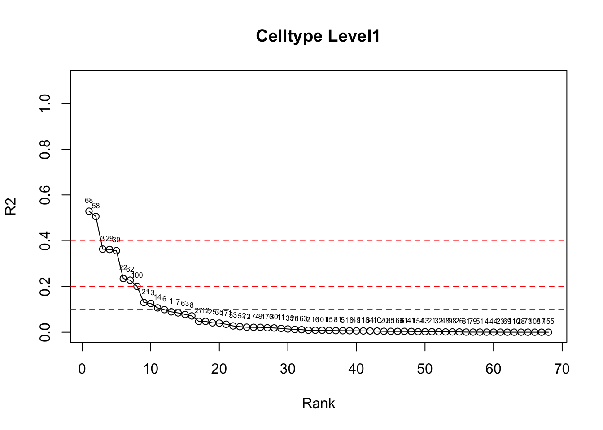
level_1_AUC <- compute_auc_matrix(loading_mat = L_pm_old_no_unhealthy_thymocytes, group_info = seurat_meta$annotation_level1[-cells_unhealthy_thymocyte])
rownames(level_1_AUC) <- sort(unique(seurat_meta$annotation_level1[-cells_unhealthy_thymocyte]))
saveRDS(level_1_AUC, file = paste0(data_path, "level_1_AUC.rds"))As discussed with David, Treg should really be thought as a subset of CD4 cells. Therefore, let’s define a new category “all_CD4” which includes both “CD4” and “Treg”, and recompute the AUC:
annotation_level1_all_CD4 <- as.character(seurat_meta$annotation_level1[-cells_unhealthy_thymocyte])
annotation_level1_all_CD4[annotation_level1_all_CD4 == "Treg"] <- "CD4"
annotation_level1_all_CD4[annotation_level1_all_CD4 != "CD4"] <- "other"
level_1_AUC_all_CD4 <- compute_auc_matrix(loading_mat = L_pm_old_no_unhealthy_thymocytes,
group_info = annotation_level1_all_CD4)
level_1_AUC <- readRDS(paste0(data_path, "level_1_AUC.rds"))
level_1_AUC <- rbind(level_1_AUC, level_1_AUC_all_CD4[1, , drop = FALSE])
rownames(level_1_AUC)[nrow(level_1_AUC)] <- "all_CD4"
saveRDS(level_1_AUC, file = paste0(data_path, "level_1_AUC.rds"))Furthermore, some of the gdT cells (gdT_cl2, 4, 11, 12, 38, 25) should be viewed as CD8aa.
annotation_level1_all_CD8aa <- as.character(seurat_meta$annotation_level1[-cells_unhealthy_thymocyte])
annotation_level2_all_CD8aa <- as.character(seurat_meta$annotation_level2[-cells_unhealthy_thymocyte])
# if level 2 is gdT_cl2, 4, 11, 12, 38, 25, then change level 1 to CD8aa
annotation_level1_all_CD8aa[annotation_level2_all_CD8aa %in% paste0("gdT_cl", c(2,4,11,12,25,38))] <- "CD8aa"
annotation_level1_all_CD8aa[annotation_level1_all_CD8aa != "CD8aa"] <- "other"
level_1_AUC_all_CD8aa <- compute_auc_matrix(loading_mat = L_pm_old_no_unhealthy_thymocytes,
group_info = annotation_level1_all_CD8aa)
level_1_AUC <- readRDS(paste0(data_path, "level_1_AUC.rds"))
level_1_AUC <- rbind(level_1_AUC, level_1_AUC_all_CD8aa[1, , drop = FALSE])
rownames(level_1_AUC)[nrow(level_1_AUC)] <- "all_CD8aa"
saveRDS(level_1_AUC, file = paste0(data_path, "level_1_AUC.rds"))annotation_level1_all_CD4 <- as.character(seurat_meta$annotation_level1)[-cells_unhealthy_thymocyte]
annotation_level1_all_CD4[annotation_level1_all_CD4 == "Treg"] <- "CD4"
annotation_level1_all_CD4[annotation_level1_all_CD4 != "CD4"] <- "other"
# boxplot of K58 on all_CD4
boxplot(L_pm_old_no_unhealthy_thymocytes[, 58] ~ annotation_level1_all_CD4, main
= "K58", ylab = "membership", outline = FALSE)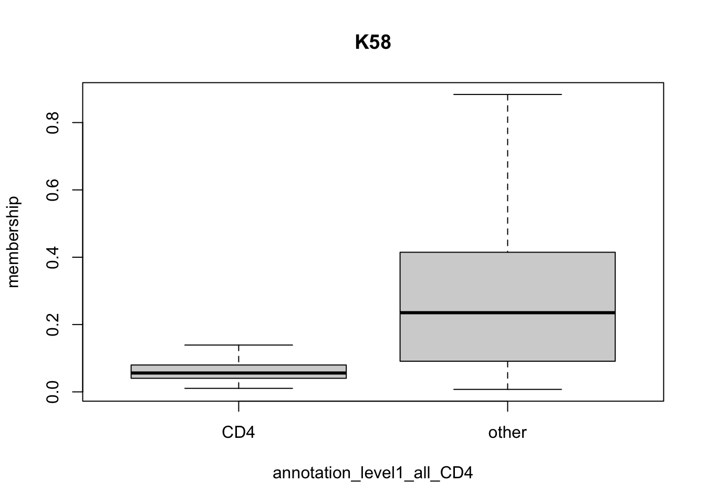
# boxplot of K29 on all_CD4
boxplot(L_pm_old_no_unhealthy_thymocytes[, 29] ~ annotation_level1_all_CD4, main =
"K29", ylab = "membership", outline = FALSE)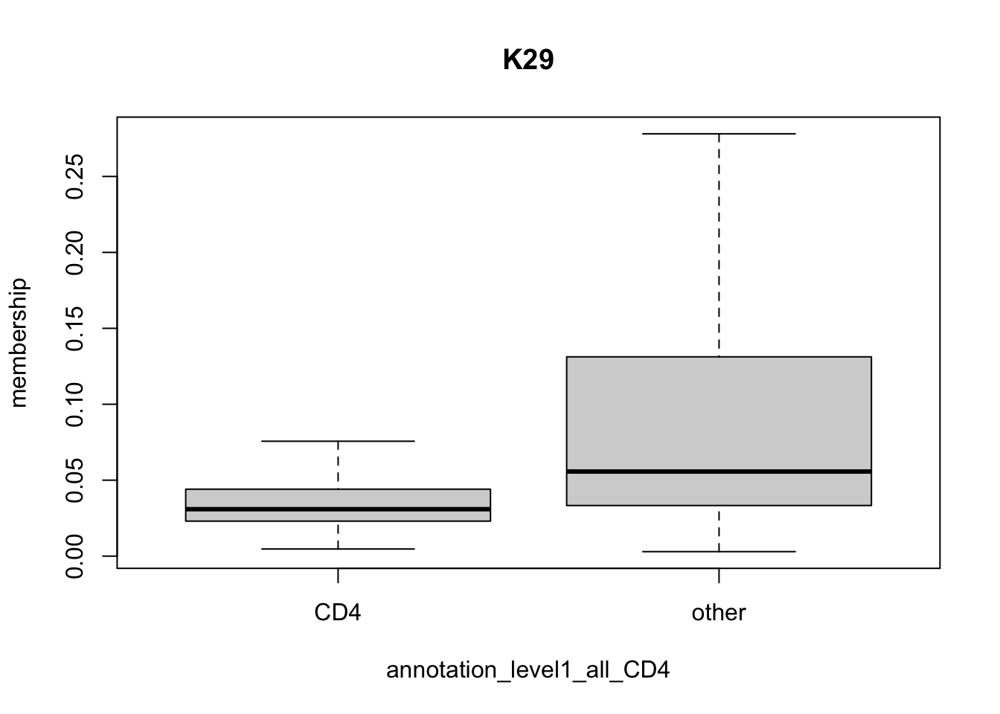
| Version | Author | Date |
|---|---|---|
| 39126f4 | Ziang Zhang | 2025-10-17 |
annotation_level1_all_CD8aa <- as.character(seurat_meta$annotation_level1[-cells_unhealthy_thymocyte])
annotation_level2_all_CD8aa <- as.character(seurat_meta$annotation_level2[-cells_unhealthy_thymocyte])
# if level 2 is gdT_cl2, 4, 11, 12, 38, 25, then change level 1 to CD8aa
annotation_level1_all_CD8aa[annotation_level2_all_CD8aa %in% paste0("gdT_cl", c(2,4,11,12,25,38))] <- "CD8aa"
annotation_level1_all_CD8aa[annotation_level1_all_CD8aa != "CD8aa"] <- "other"
# boxplot of K3 on all_CD8aa
boxplot(L_pm_old_no_unhealthy_thymocytes[, 3] ~ annotation_level1_all_CD8aa, main = "K3", ylab = "membership", outline = FALSE)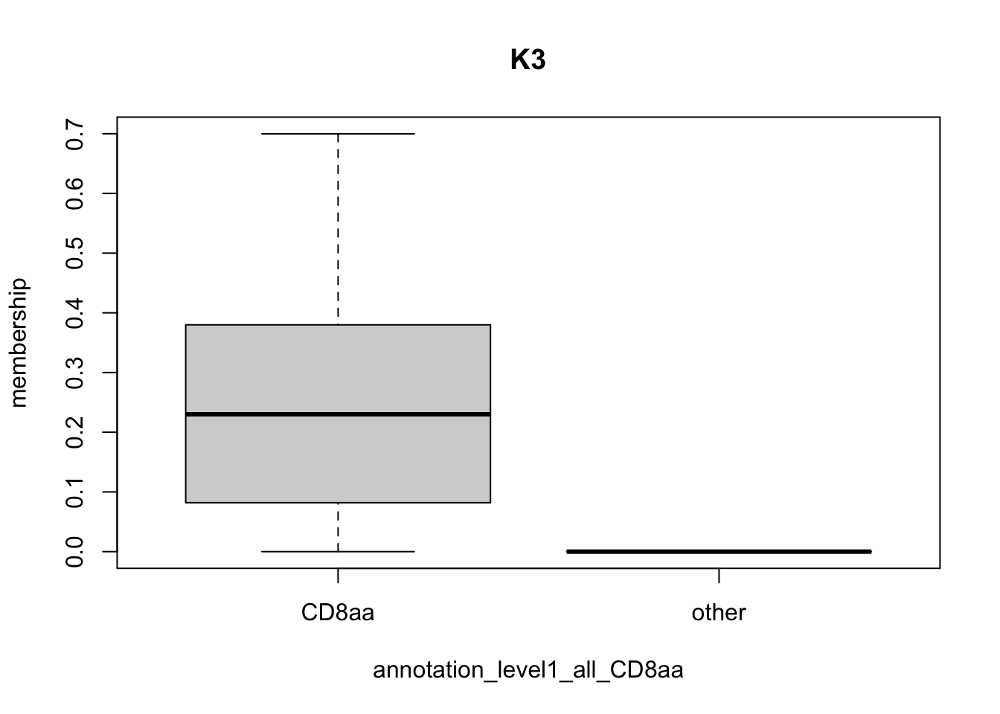
# boxplot of K171 on all_CD8aa
boxplot(L_pm_old_no_unhealthy_thymocytes[, 171] ~ annotation_level1_all_CD8aa, main = "K171", ylab = "membership", outline = FALSE)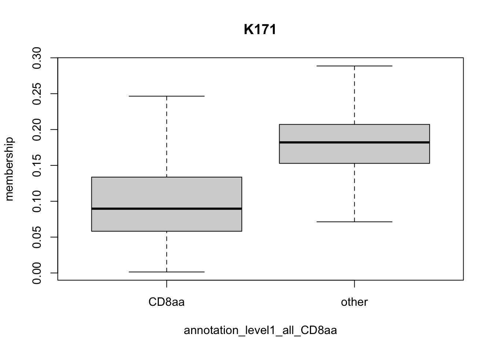
| Version | Author | Date |
|---|---|---|
| 39126f4 | Ziang Zhang | 2025-10-17 |
level_1_AUC <- readRDS(paste0(data_path, "level_1_AUC.rds"))
level_1_AUC_max <- apply(level_1_AUC, 2, max)
level_1_AUC_max_name <- apply(level_1_AUC, 2, function(x) rownames(level_1_AUC)[which.max(x)])
o <- order(level_1_AUC_max, decreasing = TRUE)
table_level_1_AUC <- data.frame(
Factor = colnames(level_1_AUC)[o],
Max_AUC = level_1_AUC_max[o],
Annotation = level_1_AUC_max_name[o]
)
# keep rows that are at least 0.8
knitr::kable(table_level_1_AUC[level_1_AUC_max[o] >= 0.8, ])| Factor | Max_AUC | Annotation | |
|---|---|---|---|
| K58 | K58 | 0.9702403 | CD8 |
| K30 | K30 | 0.9515158 | nonconv |
| K68 | K68 | 0.9474083 | Treg |
| K127 | K127 | 0.8821697 | DN |
| K171 | K171 | 0.8795632 | all_CD8aa |
| K3 | K3 | 0.8790626 | all_CD8aa |
| K22 | K22 | 0.8752785 | DN |
| K29 | K29 | 0.8660306 | CD8aa |
| K80 | K80 | 0.8247000 | DN |
table_level_1_AUC_pve <- table_level_1_AUC[table_level_1_AUC$Factor %in% colnames(L_pm),]
# color by table_level_1_AUC_pve$Annotation
colors <- RColorBrewer::brewer.pal(length(unique(table_level_1_AUC_pve$Annotation)), "Set1")
names(colors) <- unique(table_level_1_AUC_pve$Annotation)
table_level_1_AUC_pve <- table_level_1_AUC[table_level_1_AUC$Factor %in% colnames(L_pm),]
plot(1:nrow(table_level_1_AUC_pve), table_level_1_AUC_pve$Max_AUC, type = "o", xlab = "Rank by max AUC", ylab = "Max AUC", main = "Celltype Level1", col = colors[table_level_1_AUC_pve$Annotation], pch = 16)
text(1:nrow(table_level_1_AUC_pve), table_level_1_AUC_pve$Max_AUC, labels = gsub("K", "", table_level_1_AUC_pve$Factor), pos = 3, cex = 0.45, col = colors[table_level_1_AUC_pve$Annotation])
legend("topright", legend = names(colors), col = colors, pch = 16, cex = 1)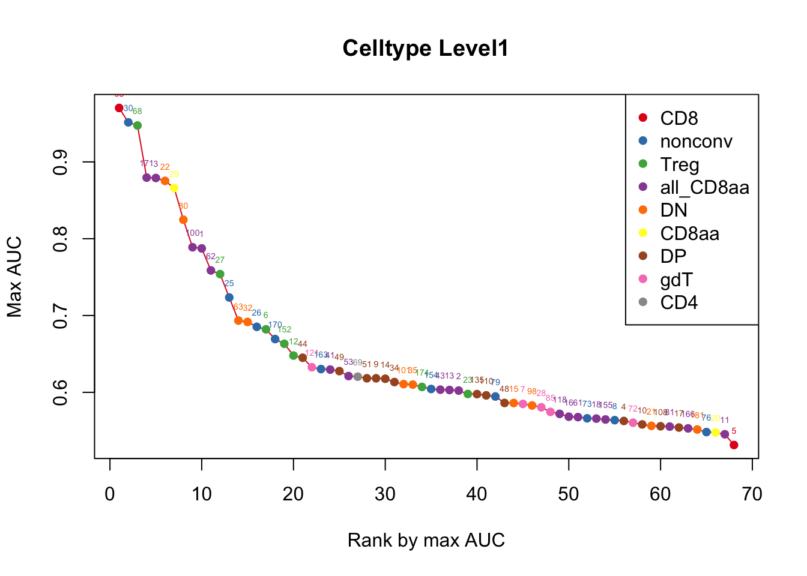
Highlight factors with maximal AUC at least \(0.8\):
highlights <- data.frame(
AUC = level_1_AUC_max[level_1_AUC_max >= 0.80],
Annotation = level_1_AUC_max_name[level_1_AUC_max >= 0.80]
)
# Arranging by AUC value
highlights <- highlights[order(highlights$AUC, decreasing = TRUE), ]
knitr::kable(highlights)| AUC | Annotation | |
|---|---|---|
| K58 | 0.9702403 | CD8 |
| K30 | 0.9515158 | nonconv |
| K68 | 0.9474083 | Treg |
| K127 | 0.8821697 | DN |
| K171 | 0.8795632 | all_CD8aa |
| K3 | 0.8790626 | all_CD8aa |
| K22 | 0.8752785 | DN |
| K29 | 0.8660306 | CD8aa |
| K80 | 0.8247000 | DN |
Structure plot of the highlighted factors:
set.seed(12345)
cell_type_factors <- as.numeric(gsub("K", rownames(highlights), replacement = ""))
fit2 <- L_pm_old_no_unhealthy_thymocytes[, cell_type_factors, drop = FALSE]
colnames(fit2) <- paste0("k", cell_type_factors)
cell_type <- seurat_meta$annotation_level1[-cells_unhealthy_thymocyte]
cells <- which(cell_type == "CD4" | cell_type == "CD8")
cells <- sample(cells,1e5)
cells <- sort(c(cells,which(cell_type != "CD4" & cell_type != "CD8")))
structure_plot(fit2[cells,],gap = 10,n = 3000,
grouping = cell_type[cells]) +
labs(y = "membership",color = "",fill = "") +
ylim(0,2) +
theme(legend.position = "bottom")Warning: `aes_string()` was deprecated in ggplot2 3.0.0.
ℹ Please use tidy evaluation idioms with `aes()`.
ℹ See also `vignette("ggplot2-in-packages")` for more information.
ℹ The deprecated feature was likely used in the fastTopics package.
Please report the issue at
<https://github.com/stephenslab/fastTopics/issues>.
This warning is displayed once every 8 hours.
Call `lifecycle::last_lifecycle_warnings()` to see where this warning was
generated.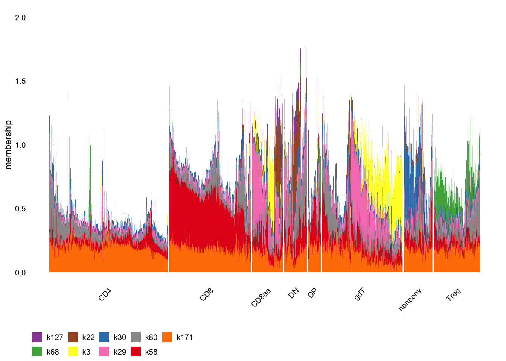
Again, as discussed with David, we will focus on healthy cells:
cells_unhealthy <- which(seurat_meta$condition_broad != "healthy")
L_pm_old_no_unhealthy <- L_pm_old[-cells_unhealthy, ]
L_pm_no_unhealthy <- L_pm[-cells_unhealthy, ]organ <- ANOVA_factors(L_pm_no_unhealthy, seurat_meta$organ_simplified[-cells_unhealthy])
organ$factor_original <- which(flashier_snmf_summary$pve > 1e-4)[organ$factor]
saveRDS(organ, file = paste0(data_path, "organ.rds"))organ <- readRDS(paste0(data_path, "organ.rds"))
plot(organ$rank, organ$stats, type = "o", xlab = "Rank", ylab = "R2", main = "organ", ylim = c(0,1.1))
text(organ$rank, organ$stats, labels = organ$factor_original, pos = 3, cex = 0.5)
abline(h = c(0.1,0.2,0.4), col = "red", lty = 2)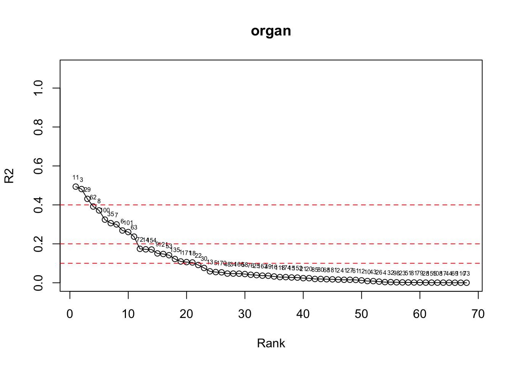
organ_AUC <- compute_auc_matrix(loading_mat = L_pm_old_no_unhealthy, group_info = seurat_meta$organ_simplified[-cells_unhealthy])
rownames(organ_AUC) <- sort(unique(seurat_meta$organ_simplified[-cells_unhealthy]))
saveRDS(organ_AUC, file = paste0(data_path, "organ_AUC.rds"))organ_AUC <- readRDS(paste0(data_path, "organ_AUC.rds"))
organ_AUC_max <- apply(organ_AUC, 2, max)
organ_AUC_max_name <- apply(organ_AUC, 2, function(x) rownames(organ_AUC)[which.max(x)])
o <- order(organ_AUC_max, decreasing = TRUE)
table_organ_AUC <- data.frame(
Max_AUC = organ_AUC_max[o],
Annotation = organ_AUC_max_name[o]
)table_organ_AUC_pve <- table_organ_AUC[rownames(table_level_1_AUC) %in% colnames(L_pm), ]
annotations <- unique(table_organ_AUC_pve$Annotation)
colors <- grDevices::colorRampPalette(RColorBrewer::brewer.pal(9, "Set3"))(length(annotations))
names(colors) <- annotations
plot(1:nrow(table_organ_AUC_pve), table_organ_AUC_pve$Max_AUC, type = "o", xlab = "Rank by max AUC", ylab = "Max AUC", main = "Organ", col = colors[table_organ_AUC_pve$Annotation], pch = 16)
text(1:nrow(table_organ_AUC_pve), table_organ_AUC_pve$Max_AUC, labels = gsub("K", "", rownames(table_organ_AUC_pve)), pos = 3, cex = 0.5, col = colors[table_organ_AUC_pve$Annotation])
legend("topright", legend = names(colors), col = colors, pch = 16, cex = 1)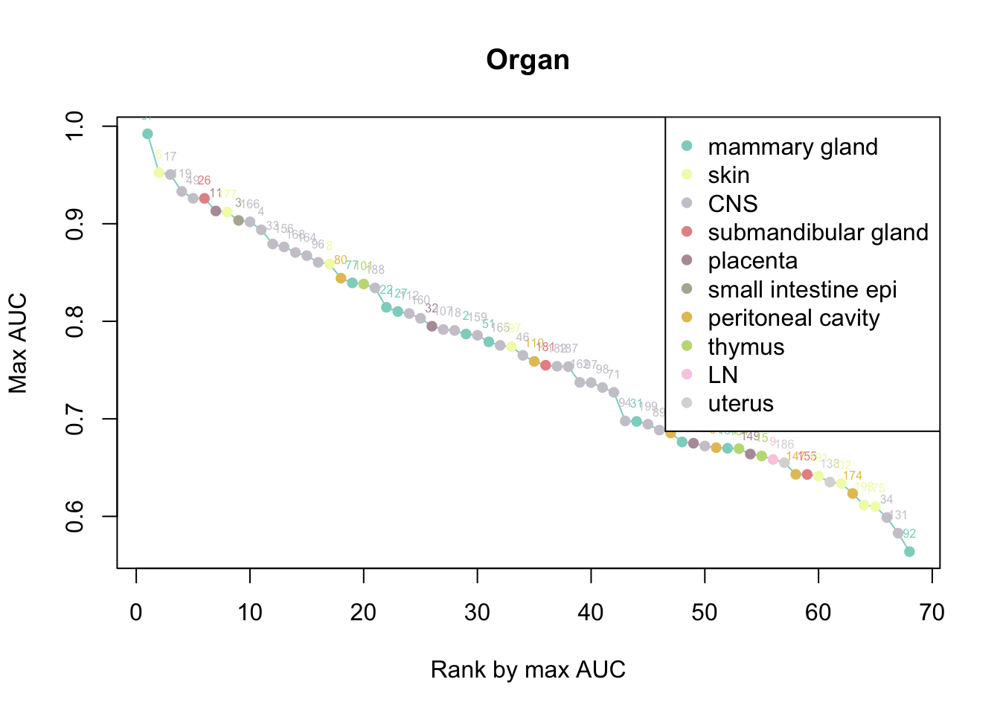
Keep factors with maximal AUC at least \(0.85\), and remove factors that correspond to synovial fluid or CNS:
highlights <- table_organ_AUC[organ_AUC_max[o] >= 0.85, ]
highlights <- highlights[!grepl("synovial", highlights$Annotation), ]
highlights <- highlights[!grepl("CNS", highlights$Annotation), ]
# produce a table
knitr::kable(highlights)| Max_AUC | Annotation | |
|---|---|---|
| K37 | 0.9921963 | mammary gland |
| K6 | 0.9524086 | skin |
| K29 | 0.9416526 | colon epi |
| K26 | 0.9260136 | submandibular gland |
| K11 | 0.9130902 | placenta |
| K177 | 0.9118635 | skin |
| K3 | 0.9033973 | small intestine epi |
| K171 | 0.8785031 | small intestine epi |
| K35 | 0.8758019 | submandibular gland |
| K8 | 0.8586702 | skin |
| K30 | 0.8583527 | submandibular gland |
Structure plot:
set.seed(12345)
organ_factors <- as.numeric(gsub("K", rownames(highlights), replacement = ""))
fit2 <- L_pm_old_no_unhealthy[, organ_factors, drop = FALSE]
colnames(fit2) <- paste0("K", organ_factors)
organ <- seurat_meta$organ_simplified[-cells_unhealthy]
cells <- sort(c(sample(which(organ == "spleen"),1e4),
sample(which(organ == "LN"),1e4),
sample(which(organ == "thymus"),3e3),
which(organ != "spleen" & organ != "LN" & organ != "thymus")))
structure_plot(fit2[cells,],gap = 5,n = 3000,
grouping = organ[cells]) +
labs(y = "membership",color = "",fill = "") +
ylim(0,2) +
theme(legend.position = "bottom")Warning: Removed 11 rows containing missing values or values outside the scale range
(`geom_col()`).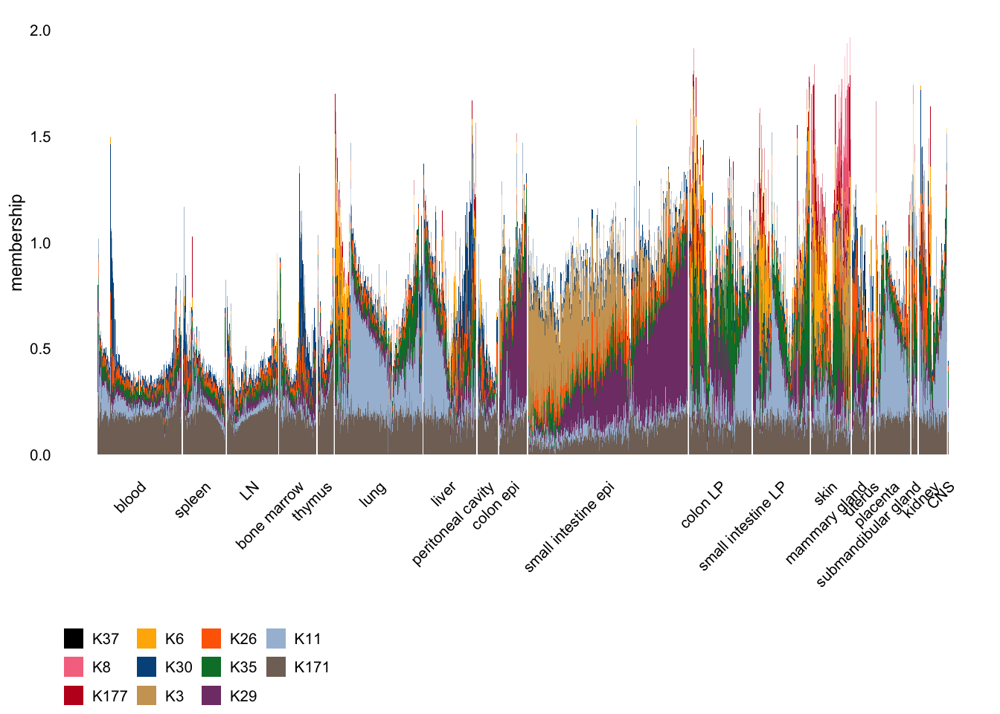
Look at the boxplot for K37 (mammary gland specific) and K6 (skin specific):
data_boxplot <- fit2[,c("K6", "K37")]
is_mammary <- seurat_meta$organ_simplified[-cells_unhealthy] == "mammary gland"
is_skin <- seurat_meta$organ_simplified[-cells_unhealthy] == "skin"
boxplot(data_boxplot[,1] ~ is_skin, main = "K6", ylab = "membership", outline = FALSE, names = c("other","skin"))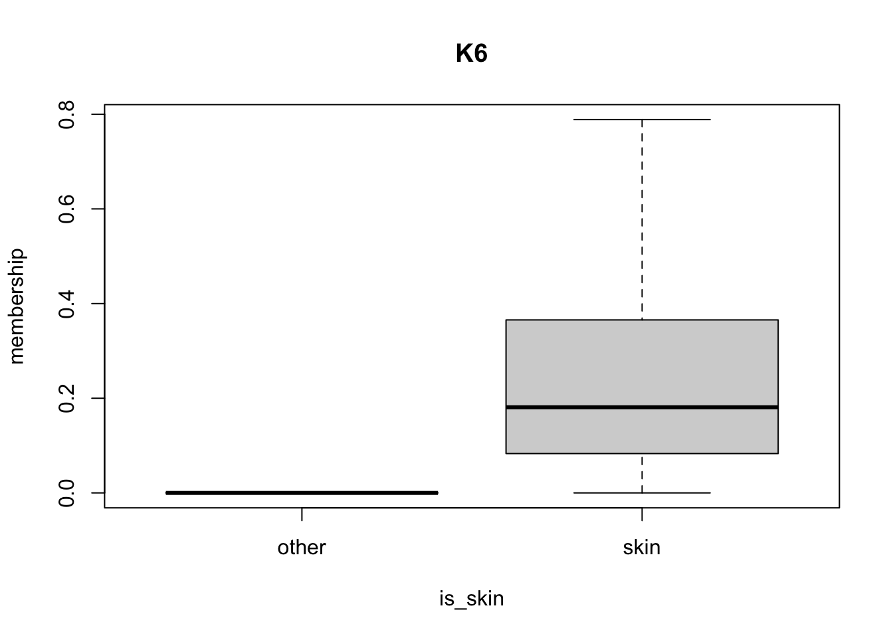
boxplot(data_boxplot[,2] ~ is_mammary, main = "K37", ylab = "membership", outline = FALSE, names = c("other","mammary gland"))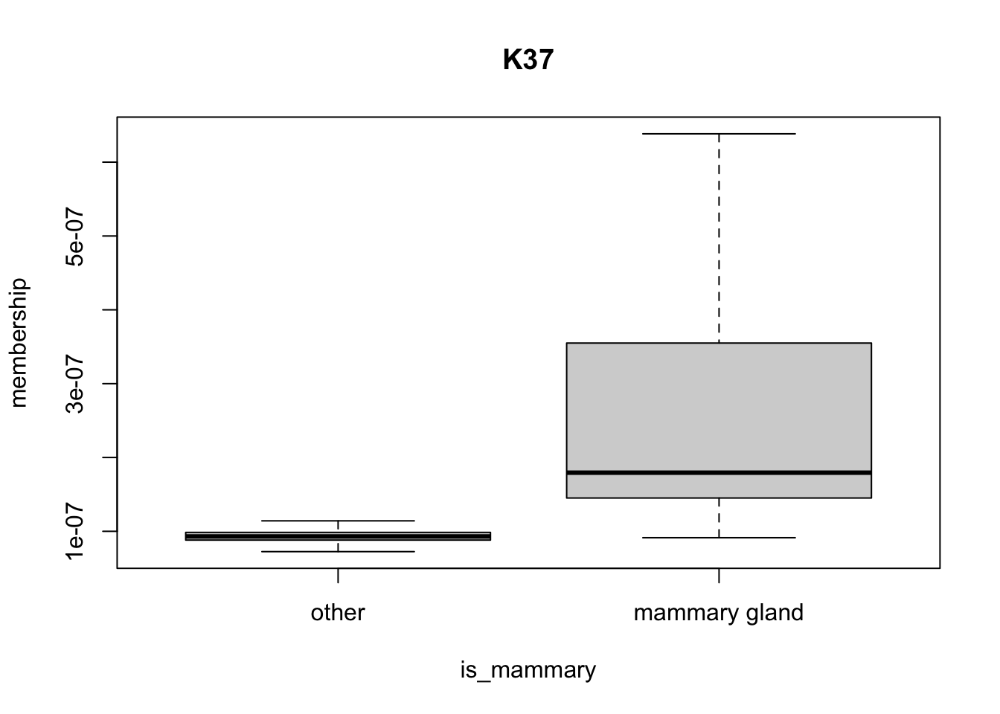
A more detailed boxplot for each:
cells_organ_healthy <- seurat_meta$organ_simplified[-cells_unhealthy]
boxplot(data_boxplot[,1] ~ cells_organ_healthy,
main = "K6", ylab = "membership", outline = FALSE, las = 2,
xlab = "", cex.axis = 0.7
)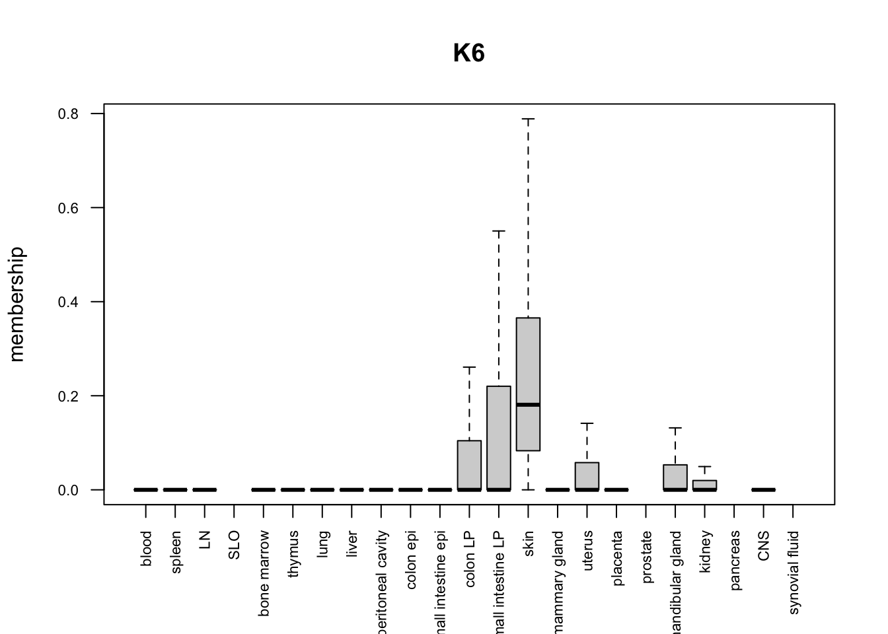
| Version | Author | Date |
|---|---|---|
| 39126f4 | Ziang Zhang | 2025-10-17 |
boxplot(data_boxplot[,2] ~ cells_organ_healthy,
main = "K37", ylab = "membership", outline = FALSE, las = 2,
xlab = "", cex.axis = 0.7
)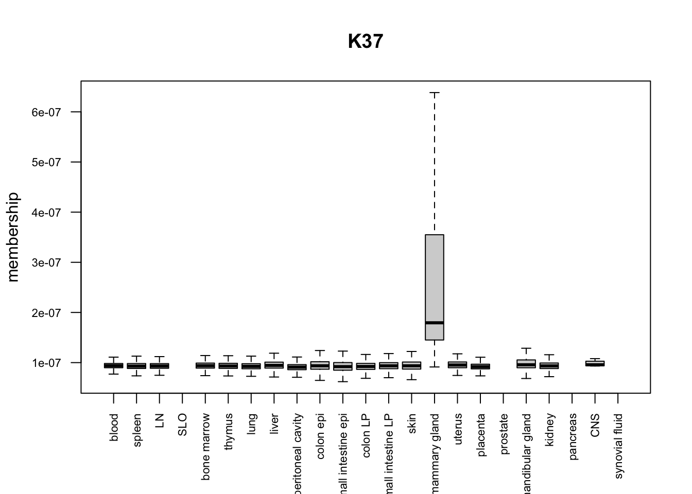
| Version | Author | Date |
|---|---|---|
| 39126f4 | Ziang Zhang | 2025-10-17 |
What if we further condition on a specific level 2 annotation?
subset_cells <- which(seurat_meta$annotation_level2[-cells_unhealthy] == "Treg_cl4")
boxplot(data_boxplot[subset_cells,1] ~ cells_organ_healthy[subset_cells],
main = "K6 (subset_cells)", ylab = "membership", outline = FALSE, las = 2,
xlab = "", cex.axis = 0.7
)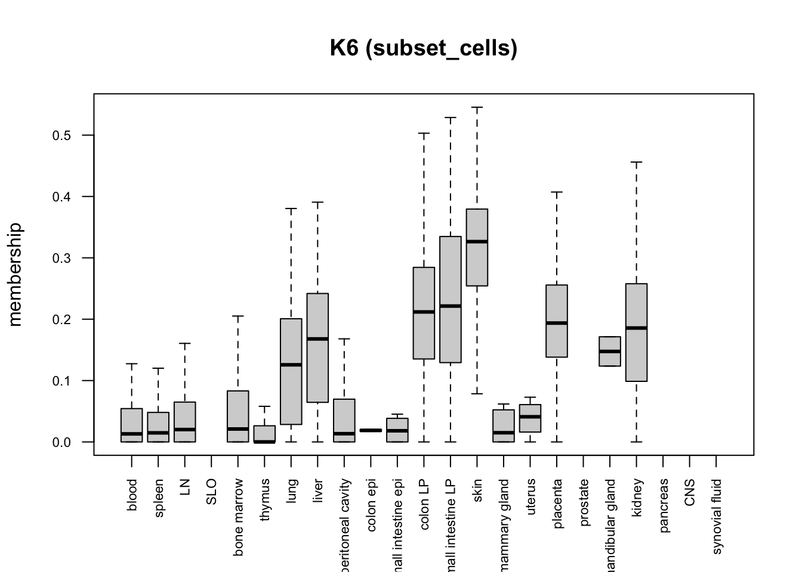
boxplot(data_boxplot[subset_cells,2] ~ cells_organ_healthy[subset_cells],
main = "K37 (subset_cells)", ylab = "membership", outline = FALSE, las = 2,
xlab = "", cex.axis = 0.7
)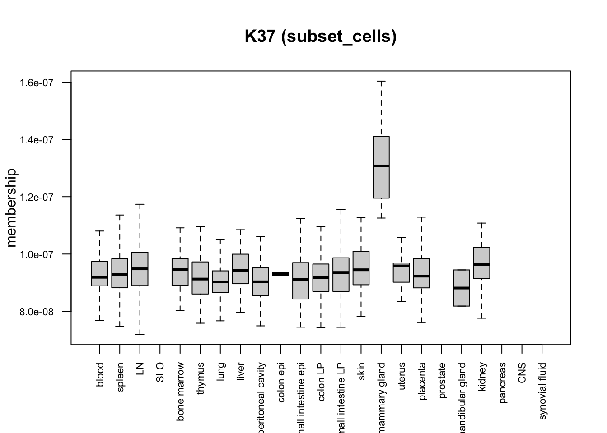
| Version | Author | Date |
|---|---|---|
| 39126f4 | Ziang Zhang | 2025-10-17 |
condition_broad <- ANOVA_factors(L_pm, seurat_meta$condition_broad)
condition_broad$factor_original <- which(flashier_snmf_summary$pve > 1e-4)[condition_broad$factor]
saveRDS(condition_broad, file = paste0(data_path, "condition_broad.rds"))condition_broad <- readRDS(paste0(data_path, "condition_broad.rds"))
plot(condition_broad$rank, condition_broad$stats, type = "o", xlab = "Rank", ylab = "R2", main = "condition_broad", ylim = c(0,1.1))
text(condition_broad$rank, condition_broad$stats, labels = condition_broad$factor_original, pos = 3, cex = 0.5)
abline(h = c(0.1,0.2,0.4), col = "red", lty = 2)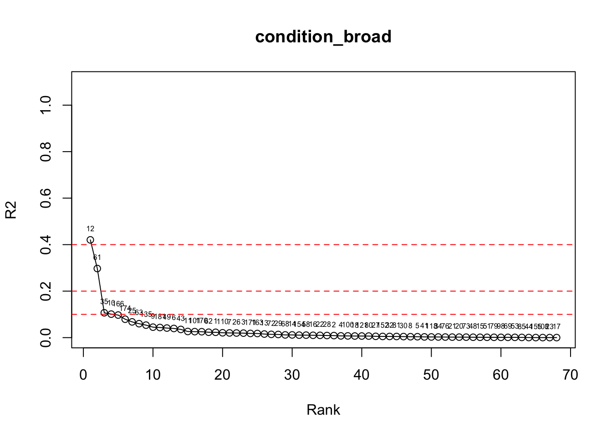
| Version | Author | Date |
|---|---|---|
| 39126f4 | Ziang Zhang | 2025-10-17 |
condition_broad_AUC <- compute_auc_matrix(loading_mat = L_pm_old, group_info = seurat_meta$condition_broad)
rownames(condition_broad_AUC) <- sort(unique(seurat_meta$condition_broad))
saveRDS(condition_broad_AUC, file = paste0(data_path, "condition_broad_AUC.rds"))condition_broad_AUC <- readRDS(paste0(data_path, "condition_broad_AUC.rds"))
condition_broad_AUC_max <- apply(condition_broad_AUC, 2, max)
condition_broad_AUC_max_name <- apply(condition_broad_AUC, 2, function(x) rownames(condition_broad_AUC)[which.max(x)])o <- order(condition_broad_AUC_max, decreasing = TRUE)
table_condition_broad_AUC <- data.frame(
Max_AUC = condition_broad_AUC_max[o],
Annotation = condition_broad_AUC_max_name[o]
)table_condition_broad_AUC_pve <- table_condition_broad_AUC[rownames(table_condition_broad_AUC) %in% colnames(L_pm), ]
annotations <- unique(table_condition_broad_AUC_pve$Annotation)
colors <- grDevices::colorRampPalette(RColorBrewer::brewer.pal(9, "Set3"))(length(annotations))
names(colors) <- annotations
plot(1:nrow(table_condition_broad_AUC_pve), table_condition_broad_AUC_pve$Max_AUC, type = "o", xlab = "Rank by max AUC", ylab = "Max AUC", main = "Condition Broad", col = colors[table_condition_broad_AUC_pve$Annotation], pch = 16)
text(1:nrow(table_condition_broad_AUC_pve), table_condition_broad_AUC_pve$Max_AUC, labels = gsub("K", "", rownames(table_condition_broad_AUC_pve)), pos = 3, cex = 0.5, col = colors[table_condition_broad_AUC_pve$Annotation])
legend("topright", legend = names(colors), col = colors, pch = 16, cex = 1)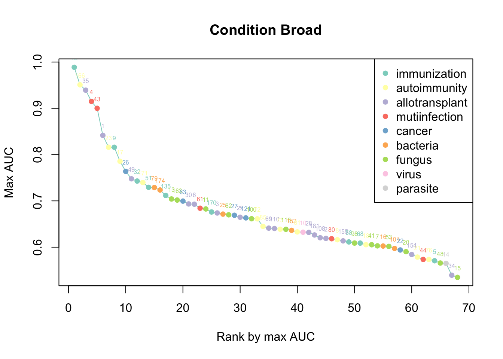
Highlight factors with maximal AUC at least \(0.85\):
highlights <- table_condition_broad_AUC[condition_broad_AUC_max[o] >= 0.85, ]
# produce a table
knitr::kable(highlights)| Max_AUC | Annotation | |
|---|---|---|
| K12 | 0.9886326 | immunization |
| K166 | 0.9508352 | autoimmunity |
| K35 | 0.9391670 | allotransplant |
| K4 | 0.9149378 | mutiinfection |
| K43 | 0.9000082 | mutiinfection |
Structure plot:
set.seed(12345)
condition_broad_factors <- as.numeric(gsub("K", rownames(highlights), replacement = ""))
fit2 <- L_pm_old[, condition_broad_factors, drop = FALSE]
colnames(fit2) <- paste0("K", condition_broad_factors)
condition_broad <- seurat_meta$condition_broad
cells <- sort(c(sample(which(condition_broad == "healthy"),5e4),
which(condition_broad != "healthy")))
structure_plot(fit2[cells, , drop = FALSE],gap = 5,n = 3000,
grouping = condition_broad[cells]) +
labs(y = "membership",color = "",fill = "") +
ylim(0,2) +
theme(legend.position = "bottom")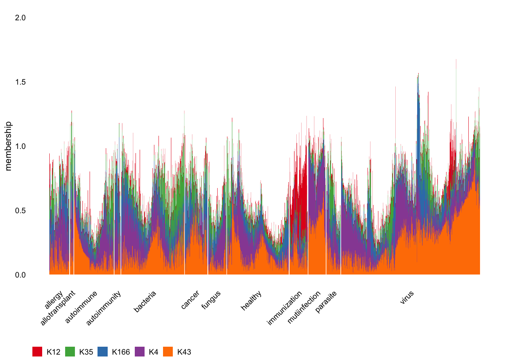
We will redo the AUC analysis when we condition on CD8 cells only:
cells_CD8 <- which(seurat_meta$annotation_level1 == "CD8")
L_pm_old_CD8 <- L_pm_old[cells_CD8, ]
L_pm_CD8 <- L_pm[cells_CD8, ]
condition_broad_CD8 <- seurat_meta$condition_broad[cells_CD8]condition_broad_AUC_CD8 <- compute_auc_matrix(loading_mat = L_pm_old_CD8,
group_info = condition_broad_CD8)
rownames(condition_broad_AUC_CD8) <- sort(unique(condition_broad_CD8))
saveRDS(condition_broad_AUC_CD8, file = paste0(data_path, "condition_broad_AUC_CD8.rds"))condition_broad_AUC_CD8 <- readRDS(paste0(data_path, "condition_broad_AUC_CD8.rds"))
condition_broad_AUC_CD8_max <- apply(condition_broad_AUC_CD8, 2, max)
condition_broad_AUC_CD8_max_name <- apply(condition_broad_AUC_CD8, 2, function(x)
rownames(condition_broad_AUC_CD8)[which.max(x)])
o <- order(condition_broad_AUC_CD8_max, decreasing = TRUE)
table_condition_broad_AUC_CD8 <- data.frame(Max_AUC = condition_broad_AUC_CD8_max[o], Annotation = condition_broad_AUC_CD8_max_name[o])table_condition_broad_AUC_CD8_pve <- table_condition_broad_AUC_CD8
table_condition_broad_AUC_CD8_pve <- table_condition_broad_AUC_CD8_pve[rownames(table_condition_broad_AUC_CD8_pve) %in% colnames(L_pm), ]
annotations <- unique(table_condition_broad_AUC_CD8_pve$Annotation)
colors <- grDevices::colorRampPalette(RColorBrewer::brewer.pal(9,"Set3"))(length(annotations))
names(colors) <- annotations
plot(
1:nrow(table_condition_broad_AUC_CD8_pve),
table_condition_broad_AUC_CD8_pve$Max_AUC,
type = "o",
xlab = "Rank by max AUC",
ylab = "Max AUC",
main = "Condition Broad (CD8)",
col = colors[table_condition_broad_AUC_CD8_pve$Annotation],
pch = 16
)
text(
1:nrow(table_condition_broad_AUC_CD8_pve),
table_condition_broad_AUC_CD8_pve$Max_AUC,
labels = gsub("K", "", rownames(table_condition_broad_AUC_CD8_pve)),
pos = 3,
cex = 0.5,
col = colors[table_condition_broad_AUC_CD8_pve$Annotation]
)
legend(
"topright",
legend = names(colors),
col = colors,
pch = 16
,
cex = 1
)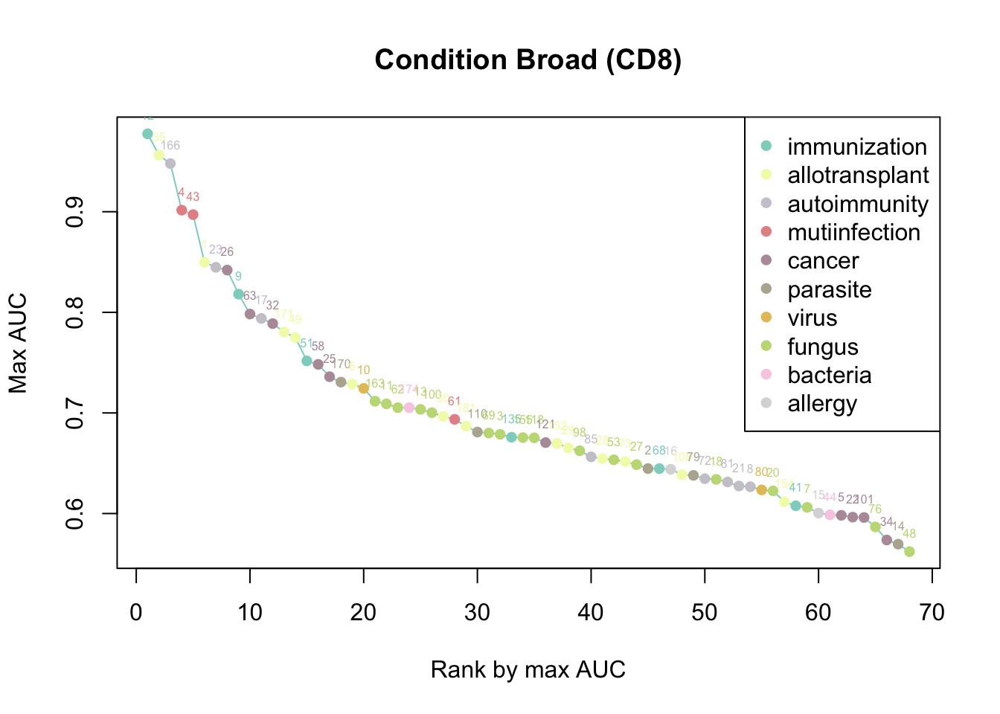
highlights <- table_condition_broad_AUC_CD8[condition_broad_AUC_CD8_max[o] >= 0.85, ]
# produce a table
knitr::kable(highlights)| Max_AUC | Annotation | |
|---|---|---|
| K12 | 0.9774405 | immunization |
| K35 | 0.9562598 | allotransplant |
| K166 | 0.9478660 | autoimmunity |
| K4 | 0.9015382 | mutiinfection |
| K43 | 0.8971193 | mutiinfection |
| K153 | 0.8530041 | allotransplant |
Structure plot:
set.seed(12345)
condition_broad_CD8_factors <- as.numeric(gsub("K", rownames(highlights), replacement = ""))
fit2 <- L_pm_old_CD8[, condition_broad_CD8_factors, drop = FALSE]
colnames(fit2) <- paste0("K", condition_broad_CD8_factors)
cells <- sort(c(sample(which(condition_broad_CD8 == "healthy"),1e3),
sample(which(condition_broad_CD8 == "virus"),1e3),
sample(which(condition_broad_CD8 == "bacteria"),1e3),
sample(which(condition_broad_CD8 == "autoimmune"),1e3),
sample(which(condition_broad_CD8 == "cancer"),1e3),
sample(which(condition_broad_CD8 == "mutiinfection"),1e3),
which(condition_broad_CD8 != "healthy" & condition_broad_CD8 != "virus" & condition_broad_CD8 != "bacteria" & condition_broad_CD8 != "autoimmune" & condition_broad_CD8 != "cancer" & condition_broad_CD8 != "mutiinfection")))
structure_plot(fit2[cells, , drop = FALSE], gap = 5,n = 3000,
grouping = condition_broad_CD8[cells]) +
labs(y = "membership",color = "",fill = "") +
ylim(0,2) +
theme(legend.position = "bottom")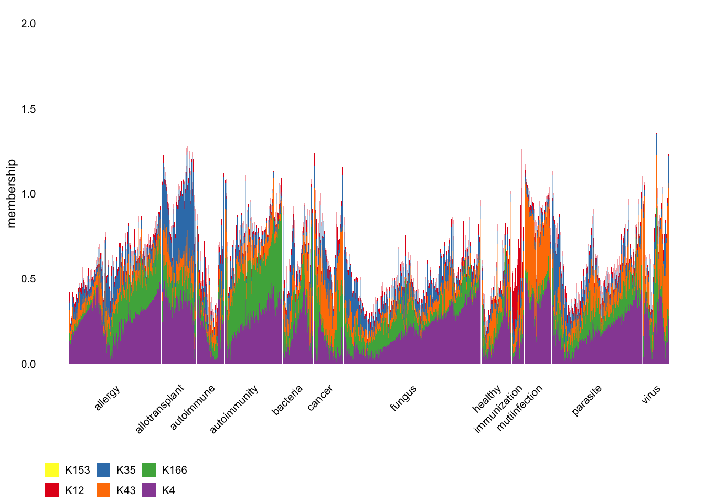
# Focus on group with at least 3000 cells
selected_conditions <- names(which(table(seurat_meta$condition_detailed) >= 3000))
selected_cells <- which(seurat_meta$condition_detailed %in% selected_conditions)condition_detailed <- ANOVA_factors(L_pm[selected_cells, ], seurat_meta$condition_detailed[selected_cells])
condition_detailed$factor_original <- which(flashier_snmf_summary$pve > 1e-4)[condition_detailed$factor]
saveRDS(condition_detailed, file = paste0(data_path, "condition_detailed.rds"))condition_detailed <- readRDS(paste0(data_path, "condition_detailed.rds"))
plot(condition_detailed$rank, condition_detailed$stats, type = "o", xlab = "Rank", ylab = "R2", main = "condition_detailed", ylim = c(0,1.1))
text(condition_detailed$rank, condition_detailed$stats, labels = condition_detailed$factor_original, pos = 3, cex = 0.5)
abline(h = c(0.1,0.2,0.4), col = "red", lty = 2)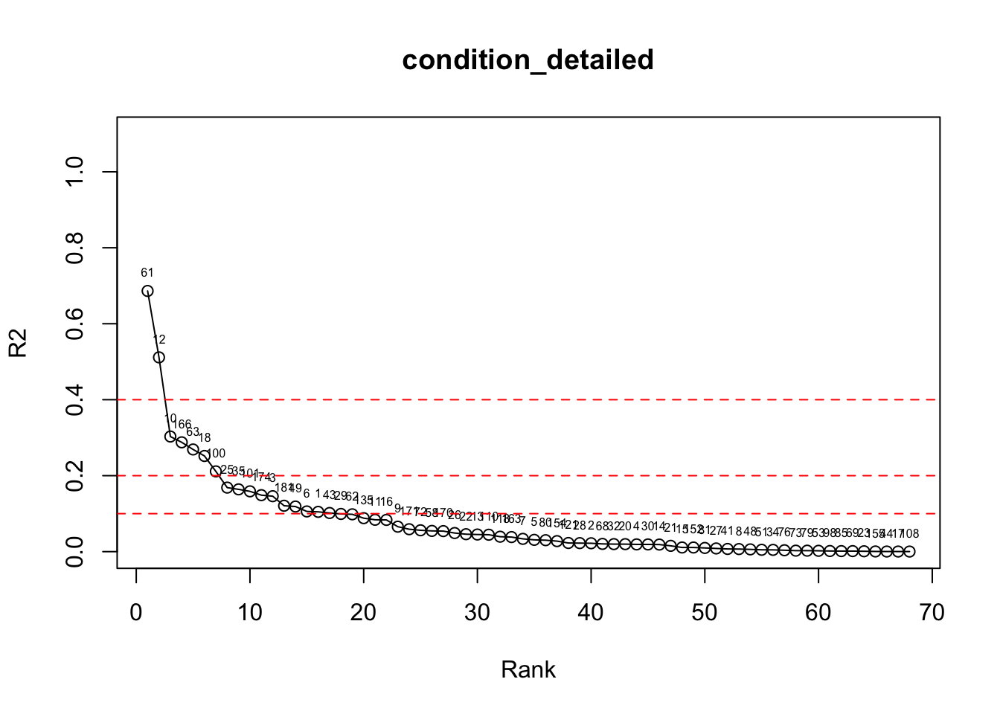
| Version | Author | Date |
|---|---|---|
| 39126f4 | Ziang Zhang | 2025-10-17 |
condition_detailed_AUC <- compute_auc_matrix(loading_mat = L_pm_old, group_info = seurat_meta$condition_detailed)
rownames(condition_detailed_AUC) <- sort(unique(seurat_meta$condition_detailed))
saveRDS(condition_detailed_AUC, file = paste0(data_path, "condition_detailed_AUC.rds"))condition_detailed_AUC <- readRDS(paste0(data_path, "condition_detailed_AUC.rds"))
condition_detailed_AUC_max <- apply(condition_detailed_AUC, 2, max)
condition_detailed_AUC_max_name <- apply(condition_detailed_AUC, 2, function(x) rownames(condition_detailed_AUC)[which.max(x)])
o <- order(condition_detailed_AUC_max, decreasing = TRUE)
table_condition_detailed_AUC <- data.frame(
Max_AUC = condition_detailed_AUC_max[o],
Annotation = condition_detailed_AUC_max_name[o]
)table_condition_detailed_AUC_pve <- table_condition_detailed_AUC[rownames(table_condition_detailed_AUC) %in% colnames(L_pm), ]
# Only focus on conditions with at least 3000 cells
table_condition_detailed_AUC_pve <- table_condition_detailed_AUC_pve[table_condition_detailed_AUC_pve$Annotation %in% selected_conditions, ]
annotations <- unique(table_condition_detailed_AUC_pve$Annotation)
colors <- grDevices::colorRampPalette(RColorBrewer::brewer.pal(9, "Set3"))(length(annotations))
names(colors) <- annotations
plot(1:nrow(table_condition_detailed_AUC_pve), table_condition_detailed_AUC_pve$Max_AUC, type = "o", xlab = "Rank by max AUC", ylab = "Max AUC", main = "Condition Detailed", col = colors[table_condition_detailed_AUC_pve$Annotation], pch = 16)
text(1:nrow(table_condition_detailed_AUC_pve), table_condition_detailed_AUC_pve$Max_AUC, labels = gsub("K", "", rownames(table_condition_detailed_AUC_pve)), pos = 3, cex = 0.7, col = colors[table_condition_detailed_AUC_pve$Annotation])
legend("topright", legend = names(colors), col = colors, pch = 16, cex = 0.85)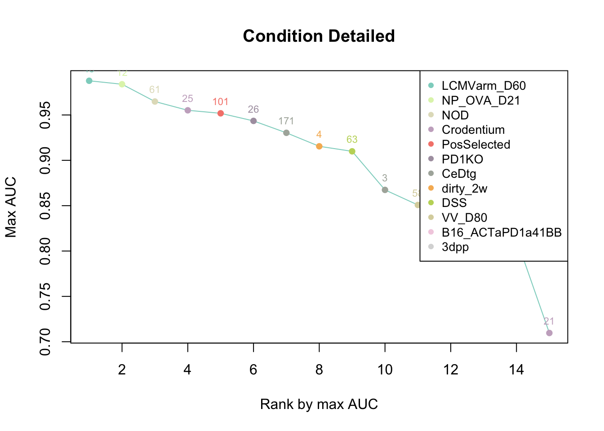
Highlight factors with maximal AUC at least \(0.85\):
highlights <- table_condition_detailed_AUC_pve[table_condition_detailed_AUC_pve$Max_AUC >= 0.85, ]
# produce a table
knitr::kable(highlights)| Max_AUC | Annotation | |
|---|---|---|
| K43 | 0.9877118 | LCMVarm_D60 |
| K12 | 0.9838970 | NP_OVA_D21 |
| K61 | 0.9648360 | NOD |
| K25 | 0.9551671 | Crodentium |
| K101 | 0.9518438 | PosSelected |
| K26 | 0.9434789 | PD1KO |
| K171 | 0.9303409 | CeDtg |
| K4 | 0.9154747 | dirty_2w |
| K63 | 0.9099382 | DSS |
| K3 | 0.8674076 | CeDtg |
| K58 | 0.8507855 | VV_D80 |
structure plot:
set.seed(12345)
condition_detailed_factors <- as.numeric(gsub("K", rownames(highlights), replacement = ""))
fit2 <- L_pm_old[, condition_detailed_factors, drop = FALSE]
colnames(fit2) <- paste0("K", condition_detailed_factors)
condition_detailed <- seurat_meta$condition_detailed
# subsample only 10000 baseline cells
cells <- sort(c(sample(which(condition_detailed == "baseline"),1e4),
which(condition_detailed != "baseline")))
structure_plot(fit2[cells, , drop = FALSE],gap = 5,n = 3000,
grouping = condition_detailed[cells]) +
labs(y = "membership",color = "",fill = "") +
ylim(0,2) +
theme(legend.position = "bottom")Warning: Removed 28 rows containing missing values or values outside the scale range
(`geom_col()`).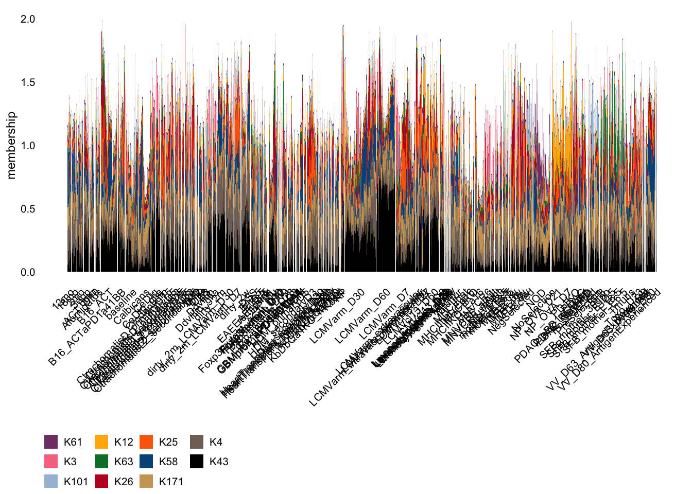
We will redo the AUC analysis when we condition on CD8 cells only:
cells_CD8 <- which(seurat_meta$annotation_level1 == "CD8")
L_pm_old_CD8 <- L_pm_old[cells_CD8, ]
L_pm_CD8 <- L_pm[cells_CD8, ]
condition_detailed_CD8 <- seurat_meta$condition_detailed[cells_CD8]condition_detailed_AUC_CD8 <- compute_auc_matrix(loading_mat = L_pm_old_CD8,
group_info = condition_detailed_CD8)
rownames(condition_detailed_AUC_CD8) <- sort(unique(condition_detailed_CD8))
saveRDS(condition_detailed_AUC_CD8, file = paste0(data_path, "condition_detailed_AUC_CD8.rds"))condition_detailed_AUC_CD8 <- readRDS(paste0(data_path, "condition_detailed_AUC_CD8.rds"))
condition_detailed_AUC_CD8_max <- apply(condition_detailed_AUC_CD8, 2, max)
condition_detailed_AUC_CD8_max_name <- apply(condition_detailed_AUC_CD8, 2, function(x)
rownames(condition_detailed_AUC_CD8)[which.max(x)])
o <- order(condition_detailed_AUC_CD8_max, decreasing = TRUE)
table_condition_detailed_AUC_CD8 <- data.frame(Max_AUC = condition_detailed_AUC_CD8_max[o], Annotation = condition_detailed_AUC_CD8_max_name[o])table_condition_detailed_AUC_CD8_pve <- table_condition_detailed_AUC_CD8
table_condition_detailed_AUC_CD8_pve <- table_condition_detailed_AUC_CD8_pve[rownames(table_condition_detailed_AUC_CD8_pve) %in% colnames(L_pm), ]
annotations <- unique(table_condition_detailed_AUC_CD8_pve$Annotation)
colors <- grDevices::colorRampPalette(RColorBrewer::brewer.pal(9,"Set3"))(length(annotations))
names(colors) <- annotations
plot(
1:nrow(table_condition_detailed_AUC_CD8_pve),
table_condition_detailed_AUC_CD8_pve$Max_AUC,
type = "o",
xlab = "Rank by max AUC",
ylab = "Max AUC",
main = "Condition Broad (CD8)",
col = colors[table_condition_detailed_AUC_CD8_pve$Annotation],
pch = 16
)
text(
1:nrow(table_condition_detailed_AUC_CD8_pve),
table_condition_detailed_AUC_CD8_pve$Max_AUC,
labels = gsub("K", "", rownames(table_condition_detailed_AUC_CD8_pve)),
pos = 3,
cex = 0.5,
col = colors[table_condition_detailed_AUC_CD8_pve$Annotation]
)
legend(
"topright",
legend = names(colors),
col = colors,
pch = 16
,
cex = 1
)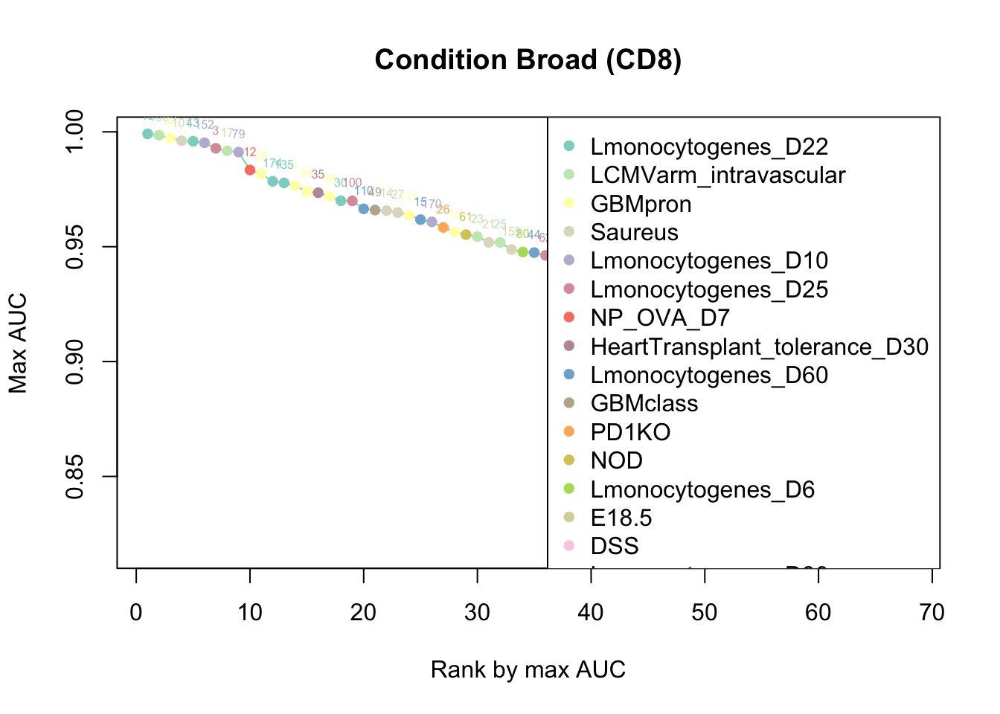
| Version | Author | Date |
|---|---|---|
| 39126f4 | Ziang Zhang | 2025-10-17 |
highlights <- table_condition_detailed_AUC_CD8[condition_detailed_AUC_CD8_max[o] >= 0.85, ]
# Remove terms less than 100
terms_less_100 <- names(table(condition_detailed_CD8))[table(condition_detailed_CD8) < 100]
highlights <- highlights[!highlights$Annotation %in% terms_less_100, ]
# produce a table
knitr::kable(highlights)| Max_AUC | Annotation | |
|---|---|---|
| K166 | 0.9985411 | LCMVarm_intravascular |
| K37 | 0.9937088 | 3dpp |
| K17 | 0.9917438 | LCMVarm_intravascular |
| K12 | 0.9834017 | NP_OVA_D7 |
| K149 | 0.9776592 | LCMVarm_intravascular |
| K35 | 0.9734850 | HeartTransplant_tolerance_D30 |
| K26 | 0.9583934 | PD1KO |
| K61 | 0.9552585 | NOD |
| K23 | 0.9543627 | LCMVarm_intravascular |
| K25 | 0.9518277 | LCMVarm_intravascular |
| K11 | 0.9443327 | E18.5 |
| K108 | 0.9414908 | LCMVarm_intravascular |
| K56 | 0.9405230 | LCMVarm_intravascular |
| K55 | 0.9384343 | LCMVarm_intravascular |
| K45 | 0.9381218 | VV_D63_AntigenExperienced |
| K124 | 0.9347367 | LCMVarm_intravascular |
| K63 | 0.9342436 | DSS |
| K173 | 0.9291197 | LCMVarm_intravascular |
| K182 | 0.9265536 | LCMVarm_intravascular |
| K54 | 0.9259396 | VV_D63_AntigenExperienced |
| K93 | 0.9258996 | LCMVarm_intravascular |
| K115 | 0.9243724 | D3 |
| K186 | 0.9228613 | D3 |
| K180 | 0.9210084 | MTB_49w |
| K130 | 0.9202104 | LCMVarm_intravascular |
| K87 | 0.9187878 | LCMVarm_intravascular |
| K146 | 0.9157924 | LCMVarm_intravascular |
| K29 | 0.8996210 | PD1KO |
| K185 | 0.8947312 | LCMVarm_intravascular |
| K20 | 0.8783802 | LCMVarm_intravascular |
| K118 | 0.8751865 | LCMVarm_intravascular |
| K157 | 0.8729168 | D3 |
sessionInfo()R version 4.5.1 (2025-06-13)
Platform: aarch64-apple-darwin20
Running under: macOS Sequoia 15.6.1
Matrix products: default
BLAS: /Library/Frameworks/R.framework/Versions/4.5-arm64/Resources/lib/libRblas.0.dylib
LAPACK: /Library/Frameworks/R.framework/Versions/4.5-arm64/Resources/lib/libRlapack.dylib; LAPACK version 3.12.1
locale:
[1] en_US.UTF-8/en_US.UTF-8/en_US.UTF-8/C/en_US.UTF-8/en_US.UTF-8
time zone: America/Toronto
tzcode source: internal
attached base packages:
[1] stats graphics grDevices utils datasets methods base
other attached packages:
[1] fastTopics_0.7-25 ggplot2_4.0.0
loaded via a namespace (and not attached):
[1] gtable_0.3.6 xfun_0.53 bslib_0.9.0
[4] htmlwidgets_1.6.4 ggrepel_0.9.6 lattice_0.22-7
[7] quadprog_1.5-8 vctrs_0.6.5 tools_4.5.1
[10] generics_0.1.4 parallel_4.5.1 tibble_3.3.0
[13] pkgconfig_2.0.3 Matrix_1.7-3 data.table_1.17.8
[16] SQUAREM_2021.1 RColorBrewer_1.1-3 S7_0.2.0
[19] RcppParallel_5.1.11-1 lifecycle_1.0.4 truncnorm_1.0-9
[22] compiler_4.5.1 farver_2.1.2 stringr_1.5.2
[25] git2r_0.36.2 progress_1.2.3 RhpcBLASctl_0.23-42
[28] httpuv_1.6.16 htmltools_0.5.8.1 sass_0.4.10
[31] yaml_2.3.10 lazyeval_0.2.2 plotly_4.11.0
[34] crayon_1.5.3 later_1.4.4 pillar_1.11.1
[37] jquerylib_0.1.4 whisker_0.4.1 tidyr_1.3.1
[40] uwot_0.2.3 cachem_1.1.0 gtools_3.9.5
[43] tidyselect_1.2.1 digest_0.6.37 Rtsne_0.17
[46] stringi_1.8.7 reshape2_1.4.4 dplyr_1.1.4
[49] purrr_1.1.0 ashr_2.2-63 labeling_0.4.3
[52] cowplot_1.2.0 rprojroot_2.1.1 fastmap_1.2.0
[55] grid_4.5.1 cli_3.6.5 invgamma_1.2
[58] magrittr_2.0.4 dichromat_2.0-0.1 withr_3.0.2
[61] prettyunits_1.2.0 scales_1.4.0 promises_1.3.3
[64] rmarkdown_2.30 httr_1.4.7 workflowr_1.7.2
[67] hms_1.1.3 pbapply_1.7-4 evaluate_1.0.5
[70] knitr_1.50 irlba_2.3.5.1 viridisLite_0.4.2
[73] rlang_1.1.6 Rcpp_1.1.0 mixsqp_0.3-54
[76] glue_1.8.0 rstudioapi_0.17.1 jsonlite_2.0.0
[79] plyr_1.8.9 R6_2.6.1 fs_1.6.6